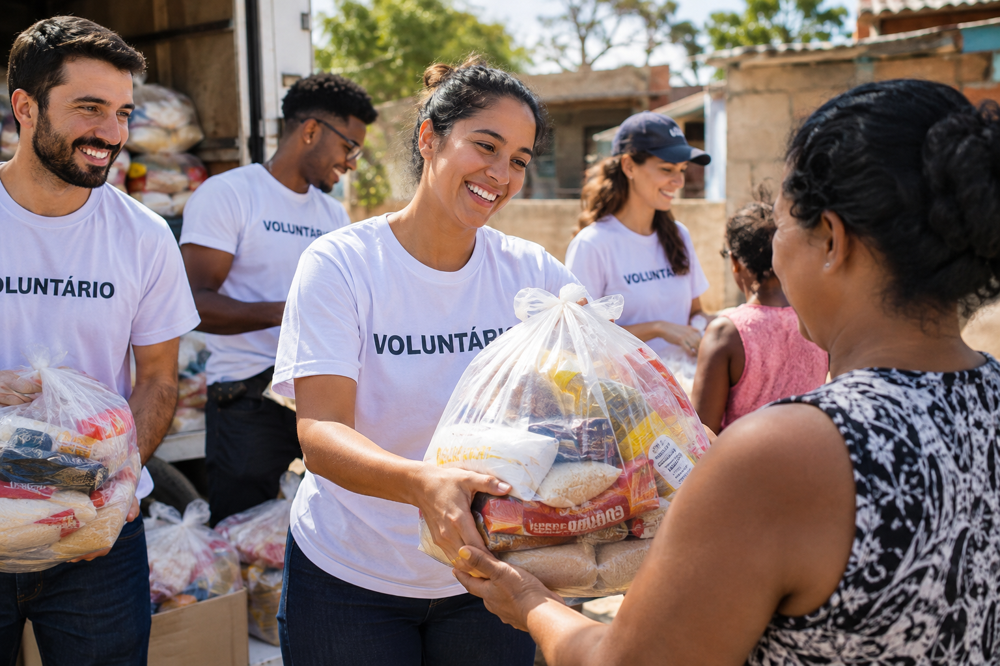

Sobre a Nossa ONG

Somos uma organização sem fins lucrativos dedicada a promover a inclusão social e garantir direitos básicos para populações vulneráveis. Trabalhamos todos os dias para construir um futuro onde a solidariedade e o respeito sejam a base da sociedade.
Como nos encontrar
Quer ser um voluntário, fazer uma doação ou conhecer mais sobre nossos projetos? Fale conosco:
- E-mail: contato@ongexemplo.org.br
- Telefone: (11) 98765-4321
- Endereço: Rua da Esperança, 456, Bairro Solidário, São Paulo - SP